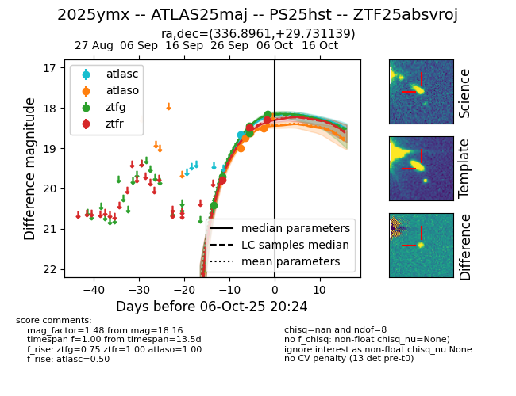
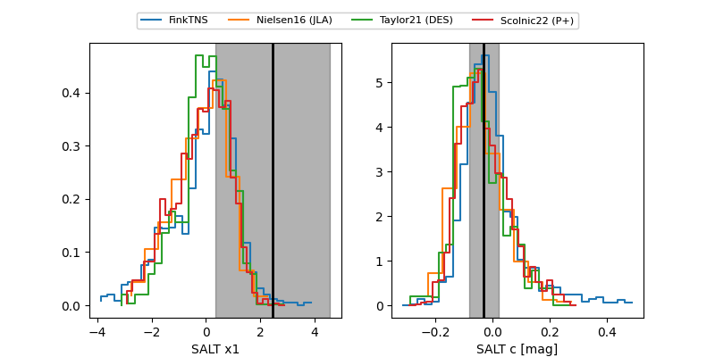

FINK: ZTF25absvroj
Lasair: ZTF25absvroj
ALeRCE: ZTF25absvroj
TNS: 2025ymx
YSE: 2025ymx
ZTF25absvroj (ztf,fink)
2025ymx (tns,yse)
ATLAS25maj (atlas)
PS25hst (panstarrs)
equatorial (ra, dec) = (336.8961,+29.73114)
galactic (l, b) = (89.1350,-23.53995)


last atlasc=18.66, atlaso=18.51, ztfg=18.16, ztfr=18.29
1 atlasc, 4 atlaso, 5 ztfg, 3 ztfr detections